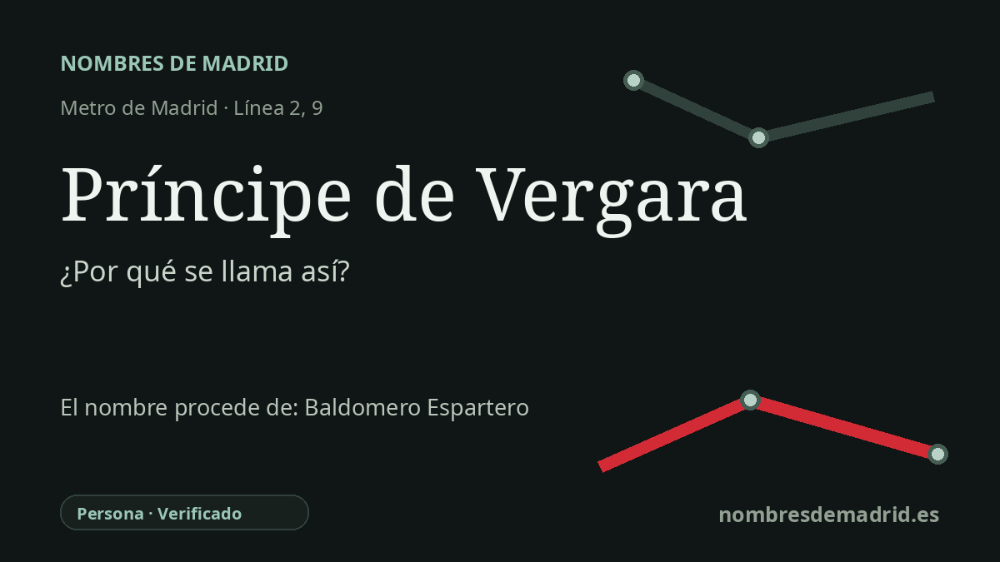

Publicado el · Investigación de Nombres de Madrid · Cómo verificamos cada origen · 7 fuentes consultadas
Respuesta rápida
Príncipe de Vergara toma su nombre de la calle situada sobre la estación, dedicada a Baldomero Espartero por su título de príncipe de Vergara. Ese título recordaba el acuerdo de Vergara de 1839, que cerró el frente norte de la Primera Guerra Carlista.
La historia del nombre
Príncipe de Vergara es una estación llamada por la ciudad que tiene encima. Está junto al cruce de la calle de Alcalá con la calle del Príncipe de Vergara, y Metro de Madrid adoptó ese nombre viario para identificar la parada.
El príncipe del nombre no es un príncipe borbónico, sino Baldomero Espartero, una de las grandes figuras militares y políticas del liberalismo español del siglo XIX. Su nombre completo fue Joaquín Baldomero Fernández-Espartero Álvarez de Toro, y pasó de un origen modesto a ser capitán general, presidente del Consejo de Ministros y regente durante la minoría de edad de Isabel II.
El título remite a un episodio histórico muy concreto. En 1839, Espartero, al mando de las fuerzas isabelinas, negoció con el general carlista Rafael Maroto. El convenio se firmó en Oñate el 29 de agosto y se confirmó en Vergara el 31 de agosto, donde la reconciliación pública de ambos mandos pasó a la historia como el Abrazo de Vergara. Aquel acuerdo cerró el frente norte de la Primera Guerra Carlista, aunque el conflicto carlista no desapareció de golpe en todos los territorios.
El rey Amadeo I concedió a Espartero el título de príncipe de Vergara el 2 de enero de 1872, décadas después de los hechos, vinculando expresamente el honor a la paz alcanzada en los campos de Vergara. El nombre madrileño de la calle llegó después: el histórico municipal de viales registra la calle del Príncipe de Vergara desde el 21 de julio de 1880, poco después de la muerte de Espartero en 1879.
El nombre de la estación conserva también los cambios de memoria del Madrid del siglo XX. Durante el franquismo, la calle y la estación se llamaron General Mola; el registro oficial de viales da ese nombre desde el 12 de diciembre de 1940 hasta el 25 de enero de 1980. La calle recuperó primero Príncipe de Vergara, y una noticia de 1983 anunció que la estación de Metro General Mola volvería a llamarse Príncipe de Vergara desde el lunes siguiente, 27 de junio de 1983.